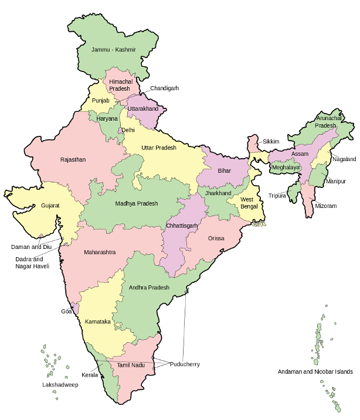

This module was developed by TinyERP Pvt Ltd (OpenERP India). Not covered under OpenERP / Odoo Maintenance Contract or Business Pack. Contact at india@openerp.com if you are looking for support or customization.
Indian Geography
List of states and cities in India

This module adds mainly all the cities of India by state.
In order to work with Indian Localization, these module eases the effort to manually add cities and states of India.